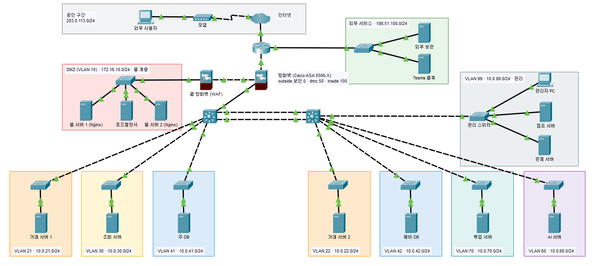

페일스톱
모의 거래소 운영 인프라
주요 설계 및 구현
04-2
전체 화면 (F)
네트워크 구성도
원본 도면
Packet Tracer
역할마다 VLAN을 나누고 그 사이에는 필요한 통신만 열었습니다.
공인 구간
203.0.113.0/24
외부 서비스
198.51.100.0/24
VLAN 10
DMZ
172.16.10.0/24
VLAN 99
관리망
10.0.99.0/24
VLAN 21
10.0.21.0/24
VLAN 30
10.0.30.0/24
VLAN 41
10.0.41.0/24
VLAN 22
10.0.22.0/24
VLAN 42
10.0.42.0/24
VLAN 70
10.0.70.0/24
VLAN 60
10.0.60.0/24
외부 사용자
인터넷
외부 보관
Teams 웹훅
경계 라우터
방화벽
Cisco ASA 5506-X
웹 방화벽
DMZ 스위치
웹 서버 1
로드밸런서
웹 서버 2
관리 스위치
관리자 PC
점프 서버
관제 서버
L3 코어 A
L3 코어 B
거래 서버 1
조회 서버
주 DB
거래 서버 2
예비 DB
백업 서버
AI 서버
NAT
203.0.113.1 → 172.16.10.10
outside
0
dmz
50
inside
100
Packet Tracer 계층형 도면 원본
그림을 누르면 확대
메모 보기
닫기 (Esc)

 Packet Tracer
Packet Tracer